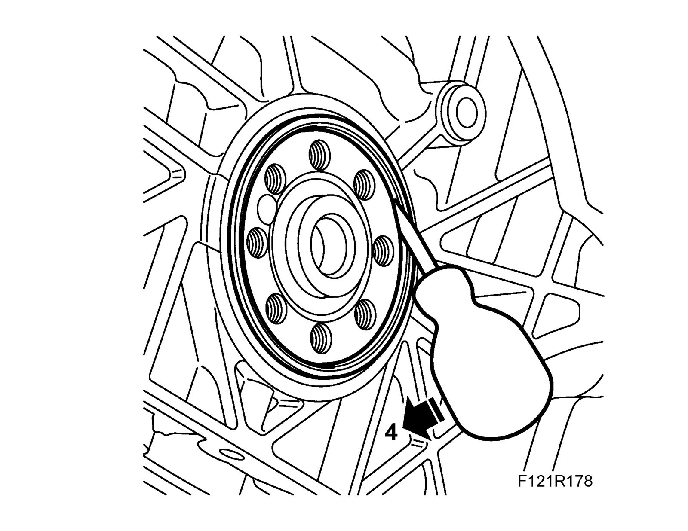
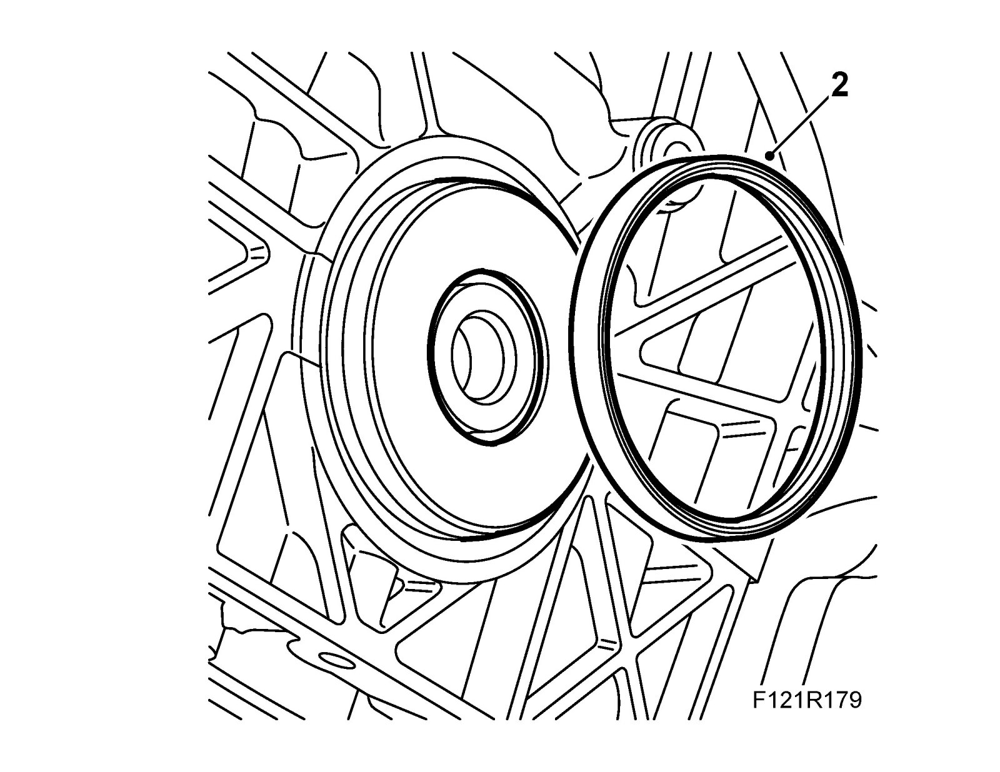
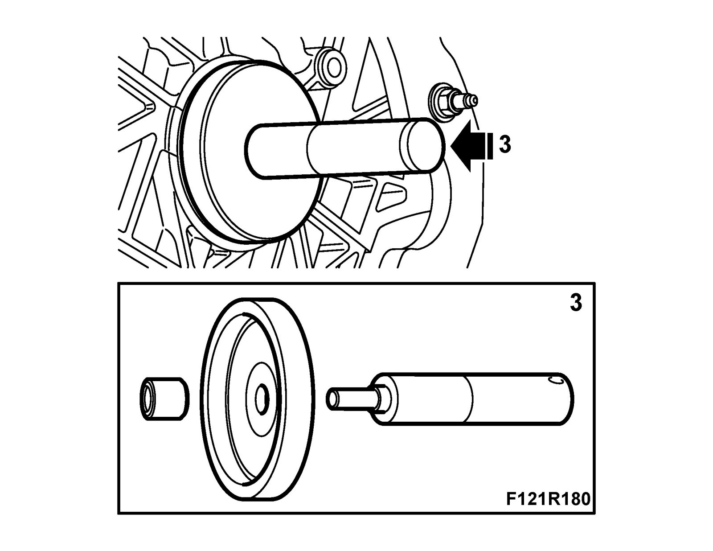

Rear Crankshaft Main Bearing Seal: Service and Repair
Rear crankshaft sealTo remove
1. Remove the gearbox
Man: Complete gearbox B207 6-speed or Complete gearbox, B207 4WD
Aut: Complete gearbox aut or Complete gearbox, B207 4WD
2. Remove the pressure plate and clutch drive plate, see Clutch assembly.
3. Remove the driver plate or the Flywheel.
4. Carefully pry out the seal using a screwdriver.

To fit
1. Clean the sealing surfaces of gasket residue.
2. Position the 83 94 975 Fitting tools, rear crankshaft seal protective collar on the crankshaft. Lubricate the new sealing ring with non-acidic Vaseline and position it on the fitting tool.


3. Position the fitting tool on the crankshaft. Drive in the sealing ring with the shaft and the narrow guide sleeve until it is flush with the timing cover. Remove the tool.
4. Fit the Flywheel or driver plate with new bolts.
5. Fit the pressure plate and the clutch drive plate, see Clutch assembly.
6. Fit the gearbox
Man: Complete gearbox B207 6-speed or Complete gearbox, B207 4WD
Aut: Complete gearbox aut. or Complete gearbox, B207 4WD
7. Check the oil level in the engine. Top up as necessary.